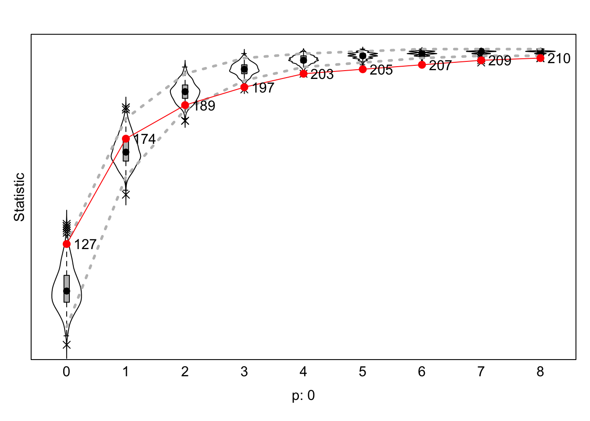
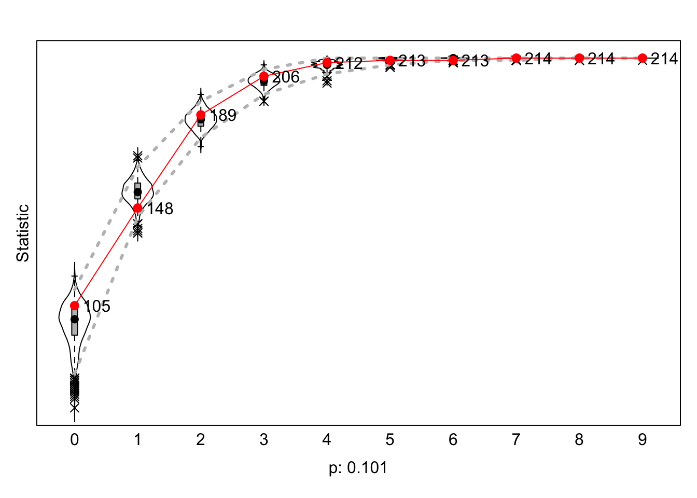
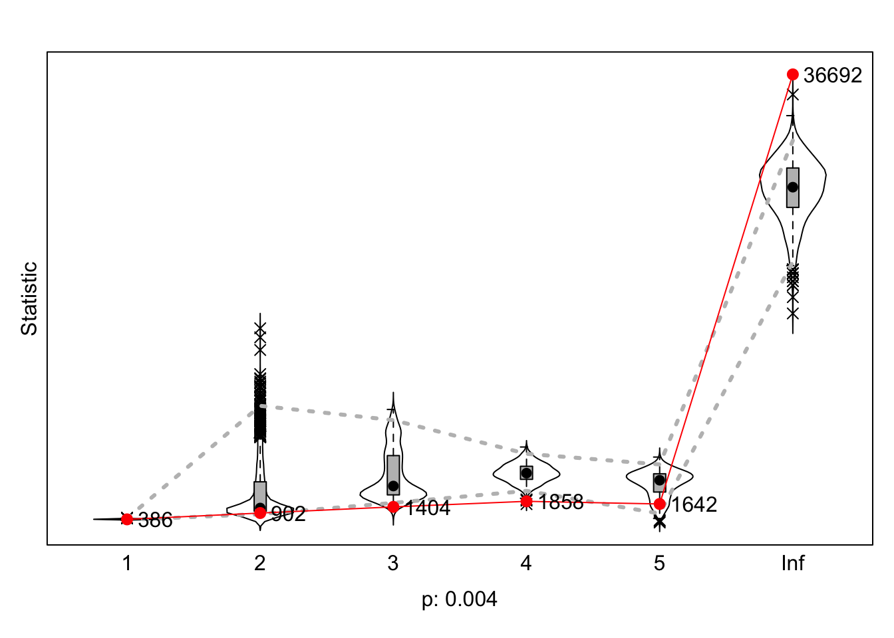

library(readr)
subset_gender <- read_csv("subset_gender.csv")
subset_gender <- as.data.frame(subset_gender)
Dependent Variable
library(labelled)
library(forcats)
test <- fcolnet(data = scholars,
university = c("RU", "UU", "UvA", "EUR"),
discipline = "sociology",
waves = list(c(2015, 2018), c(2019, 2023)),
type = c("first"))
df_soc <- test$data
df_network <- test$nets
length(df_network)
## [1] 91592
wave_1 <- df_network[1,,]
wave_2 <- df_network[2,,]
net_soc_array <- array(data = c(wave_1, wave_2), dim = c(dim(wave_1), 2))
net <- sienaDependent(net_soc_array)
Independent
Variable
#create DF
demographics_my_data <- df_soc[[1]]
demographics_my_data <- as.data.frame(do.call(rbind, demographics_my_data))
Naam <- subset_gender[,1]
last_columns_gender <- subset_gender[,c(22:24)]
usable_gender <- cbind(Naam, last_columns_gender)
usable_gender <- usable_gender %>%
drop_na(born_in)
usable_gender_2 <- left_join(demographics_my_data, usable_gender, by = "Naam")
view(usable_gender_2)
#Make Binary Variables
usable_gender_2 <- usable_gender_2 %>%
mutate(
born_in_binary = ifelse(born_in == "Netherlands", 1, 0)
)
usable_gender_2 <- usable_gender_2 %>%
mutate(
hoogleraar = ifelse(Functie.24 == "Hoogleraar", 1,0),
)
usable_gender_2 <- usable_gender_2 %>%
mutate(
functie = as.factor(Functie.24)
)
usable_gender_2 <- usable_gender_2 %>%
mutate(
functie = as.numeric(functie))
view(usable_gender_2)
#Independent-Shaped
hoogleraar_covar <- coCovar(usable_gender_2$hoogleraar)
functie_covar <- coCovar(usable_gender_2$functie)
gender_covar <- coCovar(usable_gender_2$perc_female)
country_covar <- coCovar(usable_gender_2$born_in_binary)
white_pass_covar <- coCovar(usable_gender_2$white_or_not)
#write_rds(usable_gender_2, "gender_demographics.rds")
Get Effect
Structure
my_good_data_a <- sienaDataCreate(net)
myeff_1 <- getEffects(my_good_data_a)
myeff_1
## effectName include fix test initialValue parm
## 1 basic rate parameter net TRUE FALSE FALSE 2.13235 0
## 2 outdegree (density) TRUE FALSE FALSE -1.68897 0
## 3 reciprocity TRUE FALSE FALSE 0.00000 0
Initial
Description
ifelse(!dir.exists("results"), dir.create("results"), FALSE)
## [1] FALSE
print01Report(my_good_data_a, modelname = "./results/prelimsh*t")
Specify Model
myeff_2 <- includeEffects(myeff_1, density)
## effectName include fix test initialValue parm
## 1 outdegree (density) TRUE FALSE FALSE -1.68897 0
myeff_3 <- includeEffects(myeff_2, isolateNet, inPop, outAct)
## effectName include fix test initialValue parm
## 1 indegree - popularity TRUE FALSE FALSE 0 0
## 2 outdegree - activity TRUE FALSE FALSE 0 0
## 3 network-isolate TRUE FALSE FALSE 0 0
Estimate Model
myAlgorithm <- sienaAlgorithmCreate(projname = "prelimnshit3")
## If you use this algorithm object, siena07 will create/use an output file prelimnshit3.txt .
mod_1_effects <- siena07(myAlgorithm, data = my_good_data_a, effects = myeff_3, returnDeps = TRUE)
mod_1_effects
## Estimates, standard errors and convergence t-ratios
##
## Estimate Standard Convergence
## Error t-ratio
##
## Rate parameters:
## 0 Rate parameter 3.6550 ( 0.6413 )
##
## Other parameters:
## 1. eval outdegree (density) -2.9508 ( 0.3823 ) 0.3307
## 2. eval reciprocity 2.2890 ( 0.2940 ) -0.2689
## 3. eval indegree - popularity 0.2297 ( 0.0362 ) 0.4908
## 4. eval outdegree - activity 0.0008 ( 0.0692 ) 0.1527
## 5. eval network-isolate 4.4318 ( 0.8252 ) -0.2798
##
## Overall maximum convergence ratio: 0.4946
##
##
## Total of 2620 iteration steps.
A Graph
… make the objects that we can graph-ify…
gofi0 <- sienaGOF(mod_1_effects, IndegreeDistribution, verbose = FALSE, join = TRUE, varName = "net")
gofo0 <- sienaGOF(mod_1_effects, OutdegreeDistribution, verbose = FALSE, join = TRUE, levls = c(0:10, 15, 20),
varName = "net")
gof0.gd <- sienaGOF(mod_1_effects, GeodesicDistribution, cumulative = FALSE, verbose = FALSE, join = TRUE, varName = "net")
… and then graphify!!!
plot(gofi0, main = "")

plot(gofo0, main = "")
## Note: some statistics are not plotted because their variance is 0.
## This holds for the statistics: 10 15 20.

plot(gof0.gd, main = "")

LS0tCnRpdGxlOiAiV2VlayA2IgpvdXRwdXQ6IGh0bWxfZG9jdW1lbnQKZGF0ZTogIjIwMjQtMTAtMTQiCi0tLQoKYGBge3IgZnVuY3Rpb25zL3BhY2thZ2VzIHRvIGluY2x1ZGUsIGluY2x1ZGU9RkFMU0V9CnJlcXVpcmUodGlkeXZlcnNlKQpyZXF1aXJlKGlncmFwaCkKcmVxdWlyZShzaGlueSkKcmVxdWlyZShSU2llbmEpCnJlcXVpcmUocm1kZm9ybWF0cykKcmVxdWlyZShwcmV0dHlkb2MpCnJlcXVpcmUoaHJicnRoZW1lcykKcmVxdWlyZSh0aW50KQpyZXF1aXJlKHR1ZnRlKQpyZXF1aXJlKHBzeWNoKQpsaWJyYXJ5KGRhdGEudGFibGUpICAKbGlicmFyeSh4bWwyKQpsaWJyYXJ5KHJ2ZXN0KQpsaWJyYXJ5KHhtbDIpCmxpYnJhcnkoWE1MKQpgYGAKYGBge3Igc2V0dXAgMiwgaW5jbHVkZT1GQUxTRX0KbG9hZCgiL1VzZXJzL2hhbm5haC9EZXNrdG9wL1NlYXNvbiA3LCBQYXJ0IDEvU29jaWFsIE5ldHdvcmtzL2xhYmpvdXJuYWwvc2Nob2xhcnNfMjAyNDA5MjQucmRhIikKc2Nob2xhcnMgPC0geApybSh4KQpgYGAKYGBge3IgZmNvbG5ldCwgaW5jbHVkZSA9IEZ9CmZjb2xuZXQgPC0gZnVuY3Rpb24oZGF0YSA9IHNjaG9sYXJzLCB1bml2ZXJzaXR5ID0gIlJVIiwgCiAgICAgICAgICAgICAgICAgICAgZGlzY2lwbGluZSA9ICJzb2Npb2xvZ3kiLCB3YXZlcyA9IGxpc3QoYygyMDE1LAogICAgICAgICAgICAgICAgICAgICAgICAgICAgICAgICAgICAgICAgICAgICAgICAgICAgICAgICAgICAgMjAxOCksIGMoMjAxOSwgMjAyMykpLCB0eXBlID0gYygiZmlyc3QiKSkgewogIAogICMgc3RlcCAxCiAgZGVtb2dyYXBoaWNzIDwtIGRvLmNhbGwocmJpbmQuZGF0YS5mcmFtZSwgZGF0YSRkZW1vZ3JhcGhpY3MpCiAgZGVtb2dyYXBoaWNzIDwtIGRlbW9ncmFwaGljcyAlPiUKICAgIG11dGF0ZShVbml2ZXJzaXRlaXQxLjIyID0gcmVwbGFjZShVbml2ZXJzaXRlaXQxLjIyLCBpcy5uYShVbml2ZXJzaXRlaXQxLjIyKSwgIiIpLCBVbml2ZXJzaXRlaXQyLjIyID0gcmVwbGFjZShVbml2ZXJzaXRlaXQyLjIyLAogICAgICAgICAgICAgICAgICAgICAgICAgICAgICAgICAgICAgICAgICAgICAgICAgICAgICAgICAgICAgICAgICAgICAgICAgICAgICAgICAgICAgICAgICAgICAgICAgICAgICAgICAgICAgICAgIGlzLm5hKFVuaXZlcnNpdGVpdDIuMjIpLCAiIiksIFVuaXZlcnNpdGVpdDEuMjQgPSByZXBsYWNlKFVuaXZlcnNpdGVpdDEuMjQsIGlzLm5hKFVuaXZlcnNpdGVpdDEuMjQpLAogICAgICAgICAgICAgICAgICAgICAgICAgICAgICAgICAgICAgICAgICAgICAgICAgICAgICAgICAgICAgICAgICAgICAgICAgICAgICAgICAgICAgICAgICAgICAgICAgICAgICAgICAgICAgICAgICAgICAgICAgICAgICAgICAgICAgICAgICAgICAgICAgICAgICAgICAgICAgICAgICAgICAgICAgICIiKSwgVW5pdmVyc2l0ZWl0Mi4yNCA9IHJlcGxhY2UoVW5pdmVyc2l0ZWl0Mi4yNCwgaXMubmEoVW5pdmVyc2l0ZWl0Mi4yNCksICIiKSwgZGlzY2lwbGluZS4yMiA9IHJlcGxhY2UoZGlzY2lwbGluZS4yMiwKICAgICAgICAgICAgICAgICAgICAgICAgICAgICAgICAgICAgICAgICAgICAgICAgICAgICAgICAgICAgICAgICAgICAgICAgICAgICAgICAgICAgICAgICAgICAgICAgICAgICAgICAgICAgICAgICAgICAgICAgICAgICAgICAgICAgICAgICAgICAgICAgICAgICAgICAgICAgICAgICAgICAgICAgICAgICAgICAgICAgICAgICAgICAgICAgICAgICAgICAgICAgICAgICAgICAgICAgICAgICAgICAgICAgICAgICAgICAgICAgICAgICAgICAgICAgICAgICAgICAgICAgICAgICAgICAgIGlzLm5hKGRpc2NpcGxpbmUuMjIpLCAiIiksIGRpc2NpcGxpbmUuMjQgPSByZXBsYWNlKGRpc2NpcGxpbmUuMjQsIGlzLm5hKGRpc2NpcGxpbmUuMjQpLCAiIikpCiAgCiAgc2FtcGxlIDwtIHdoaWNoKChkZW1vZ3JhcGhpY3MkVW5pdmVyc2l0ZWl0MS4yMiAlaW4lIHVuaXZlcnNpdHkgfCBkZW1vZ3JhcGhpY3MkVW5pdmVyc2l0ZWl0Mi4yMiAlaW4lCiAgICAgICAgICAgICAgICAgICAgIHVuaXZlcnNpdHkgfCBkZW1vZ3JhcGhpY3MkVW5pdmVyc2l0ZWl0MS4yNCAlaW4lIHVuaXZlcnNpdHkgfCBkZW1vZ3JhcGhpY3MkVW5pdmVyc2l0ZWl0Mi4yNCAlaW4lCiAgICAgICAgICAgICAgICAgICAgIHVuaXZlcnNpdHkpICYgKGRlbW9ncmFwaGljcyRkaXNjaXBsaW5lLjIyICVpbiUgZGlzY2lwbGluZSB8IGRlbW9ncmFwaGljcyRkaXNjaXBsaW5lLjI0ICVpbiUgZGlzY2lwbGluZSkpCiAgCiAgZGVtb2dyYXBoaWNzX3NvYyA8LSBkZW1vZ3JhcGhpY3Nbc2FtcGxlLCBdCiAgc2Nob2xhcnNfc2VsIDwtIGxhcHBseShzY2hvbGFycywgIlsiLCBzYW1wbGUpCiAgCiAgIyBzdGVwIDIKICBpZHMgPC0gZGVtb2dyYXBoaWNzX3NvYyRhdV9pZAogIG53YXZlcyA8LSBsZW5ndGgod2F2ZXMpCiAgbmV0cyA8LSBhcnJheSgwLCBkaW0gPSBjKG53YXZlcywgbGVuZ3RoKGlkcyksIGxlbmd0aChpZHMpKSwgZGltbmFtZXMgPSBsaXN0KHdhdmUgPSAxOm53YXZlcywgaWRzLAogICAgICAgICAgICAgICAgICAgICAgICAgICAgICAgICAgICAgICAgICAgICAgICAgICAgICAgICAgICAgICAgICAgICAgICAgICAgICBpZHMpKQogIGRpbW5hbWVzKG5ldHMpCiAgCiAgIyBzdGVwIDMKICBkZl93b3JrcyA8LSB0aWJibGUod29ya3NfaWQgPSB1bmxpc3QobGFwcGx5KHNjaG9sYXJzX3NlbCR3b3JrLCBmdW5jdGlvbihsKSBsJGlkKSksIHdvcmtzX2F1dGhvciA9IHVubGlzdChsYXBwbHkoc2Nob2xhcnNfc2VsJHdvcmssCiAgICAgICAgICAgICAgICAgICAgICAgICAgICAgICAgICAgICAgICAgICAgICAgICAgICAgICAgICAgICAgICAgICAgICAgICAgICAgICAgICAgICAgICAgICAgICAgICAgICAgICAgICAgICAgICAgIGZ1bmN0aW9uKGwpIGwkYXV0aG9yKSwgcmVjdXJzaXZlID0gRkFMU0UpLCB3b3Jrc195ZWFyID0gdW5saXN0KGxhcHBseShzY2hvbGFyc19zZWwkd29yaywgZnVuY3Rpb24obCkgbCRwdWJsaWNhdGlvbl95ZWFyKSwKICAgICAgICAgICAgICAgICAgICAgICAgICAgICAgICAgICAgICAgICAgICAgICAgICAgICAgICAgICAgICAgICAgICAgICAgICAgICAgICAgICAgICAgICAgICAgICAgICAgICAgICAgICAgICAgICAgICAgICAgICAgICAgICAgICAgICAgICAgICAgICAgICAgICAgICAgICAgICAgICAgICAgICAgICAgICAgICAgcmVjdXJzaXZlID0gRkFMU0UpKQogIAogIGRmX3dvcmtzIDwtIGRmX3dvcmtzWyFkdXBsaWNhdGVkKGRmX3dvcmtzKSwgXQogIAogICMgc3RlcCA0CiAgaWYgKHR5cGUgPT0gImZpcnN0IikgewogICAgZm9yIChqIGluIDE6bndhdmVzKSB7CiAgICAgIGRmX3dvcmtzX3cgPC0gZGZfd29ya3NbZGZfd29ya3Mkd29ya3NfeWVhciA+PSB3YXZlc1tbal1dWzFdICYgZGZfd29ya3Mkd29ya3NfeWVhciA8PSB3YXZlc1tbal1dWzJdLAogICAgICBdCiAgICAgIGZvciAoaSBpbiAxOm5yb3coZGZfd29ya3NfdykpIHsKICAgICAgICBlZ28gPC0gZGZfd29ya3NfdyR3b3Jrc19hdXRob3JbaV1bWzFdXSRhdV9pZFsxXQogICAgICAgIGFsdGVycyA8LSBkZl93b3Jrc193JHdvcmtzX2F1dGhvcltpXVtbMV1dJGF1X2lkWy0xXQogICAgICAgIGlmIChzdW0oaWRzICVpbiUgZWdvKSA+IDAgJiBzdW0oaWRzICVpbiUgYWx0ZXJzKSA+IDApIHsKICAgICAgICAgIG5ldHNbaiwgd2hpY2goaWRzICVpbiUgZWdvKSwgd2hpY2goaWRzICVpbiUgYWx0ZXJzKV0gPC0gMQogICAgICAgIH0KICAgICAgfQogICAgfQogIH0KICAKICBpZiAodHlwZSA9PSAibGFzdCIpIHsKICAgIGZvciAoaiBpbiAxOm53YXZlcykgewogICAgICBkZl93b3Jrc193IDwtIGRmX3dvcmtzW2RmX3dvcmtzJHdvcmtzX3llYXIgPj0gd2F2ZXNbW2pdXVsxXSAmIGRmX3dvcmtzJHdvcmtzX3llYXIgPD0gd2F2ZXNbW2pdXVsyXSwKICAgICAgXQogICAgICBmb3IgKGkgaW4gMTpucm93KGRmX3dvcmtzX3cpKSB7CiAgICAgICAgZWdvIDwtIHJldihkZl93b3Jrc193JHdvcmtzX2F1dGhvcltpXVtbMV1dJGF1X2lkKVsxXQogICAgICAgIGFsdGVycyA8LSByZXYoZGZfd29ya3NfdyR3b3Jrc19hdXRob3JbaV1bWzFdXSRhdV9pZClbLTFdCiAgICAgICAgaWYgKHN1bShpZHMgJWluJSBlZ28pID4gMCAmIHN1bShpZHMgJWluJSBhbHRlcnMpID4gMCkgewogICAgICAgICAgbmV0c1tqLCB3aGljaChpZHMgJWluJSBlZ28pLCB3aGljaChpZHMgJWluJSBhbHRlcnMpXSA8LSAxCiAgICAgICAgfQogICAgICB9CiAgICB9CiAgfQogIAogIGlmICh0eXBlID09ICJhbGwiKSB7CiAgICBmb3IgKGogaW4gMTpud2F2ZXMpIHsKICAgICAgZGZfd29ya3NfdyA8LSBkZl93b3Jrc1tkZl93b3JrcyR3b3Jrc195ZWFyID49IHdhdmVzW1tqXV1bMV0gJiBkZl93b3JrcyR3b3Jrc195ZWFyIDw9IHdhdmVzW1tqXV1bMl0sCiAgICAgIF0KICAgICAgZm9yIChpIGluIDE6bnJvdyhkZl93b3Jrc193KSkgewogICAgICAgIGVnb3MgPC0gZGZfd29ya3NfdyR3b3Jrc19hdXRob3JbaV1bWzFdXSRhdV9pZAogICAgICAgIGlmIChzdW0oaWRzICVpbiUgZWdvcykgPiAwKSB7CiAgICAgICAgICBuZXRzW2osIHdoaWNoKGlkcyAlaW4lIGVnb3MpLCB3aGljaChpZHMgJWluJSBlZ29zKV0gPC0gMQogICAgICAgIH0KICAgICAgfQogICAgfQogIH0KICBvdXRwdXQgPC0gbGlzdCgpCiAgb3V0cHV0JGRhdGEgPC0gc2Nob2xhcnNfc2VsCiAgb3V0cHV0JG5ldHMgPC0gbmV0cwogIHJldHVybihvdXRwdXQpCn0KCmBgYApgYGB7ciBteWRhdGEsIG1lc3NhZ2U9Rn0KbGlicmFyeShyZWFkcikKc3Vic2V0X2dlbmRlciA8LSByZWFkX2Nzdigic3Vic2V0X2dlbmRlci5jc3YiKQpzdWJzZXRfZ2VuZGVyIDwtIGFzLmRhdGEuZnJhbWUoc3Vic2V0X2dlbmRlcikKYGBgCiMgRGVwZW5kZW50IFZhcmlhYmxlIAoKYGBge3J9CmxpYnJhcnkobGFiZWxsZWQpCmxpYnJhcnkoZm9yY2F0cykKdGVzdCA8LSBmY29sbmV0KGRhdGEgPSBzY2hvbGFycywKICAgICAgICAgICAgICAgIHVuaXZlcnNpdHkgPSBjKCJSVSIsICJVVSIsICJVdkEiLCAiRVVSIiksIAogICAgICAgICAgICAgICAgZGlzY2lwbGluZSA9ICJzb2Npb2xvZ3kiLAogICAgICAgICAgICAgICAgd2F2ZXMgPSBsaXN0KGMoMjAxNSwgMjAxOCksIGMoMjAxOSwgMjAyMykpLAogICAgICAgICAgICAgICAgdHlwZSA9IGMoImZpcnN0IikpCmRmX3NvYyA8LSB0ZXN0JGRhdGEKZGZfbmV0d29yayA8LSB0ZXN0JG5ldHMKbGVuZ3RoKGRmX25ldHdvcmspCgp3YXZlXzEgPC0gZGZfbmV0d29ya1sxLCxdCndhdmVfMiA8LSBkZl9uZXR3b3JrWzIsLF0KbmV0X3NvY19hcnJheSA8LSBhcnJheShkYXRhID0gYyh3YXZlXzEsIHdhdmVfMiksIGRpbSA9IGMoZGltKHdhdmVfMSksIDIpKQoKbmV0IDwtIHNpZW5hRGVwZW5kZW50KG5ldF9zb2NfYXJyYXkpCmBgYAoKYGBge3Igd3JpdGUgZW0sIGluY2x1ZGUgPSBGfQojd3JpdGVfcmRzKHRlc3QsICJhbGxfbXlfZGF0YS5yZHMiKQojd3JpdGVfcmRzKGRmX3NvYywgImFsbF9teV9kYXRhX3NvYy5yZHMiKQojd3JpdGVfcmRzKG5ldCwgImFsbF9teV9uZXR3b3JrLnJkcyIpCmBgYAoKCiMgSW5kZXBlbmRlbnQgVmFyaWFibGUgCgpgYGB7cn0KI2NyZWF0ZSBERgpkZW1vZ3JhcGhpY3NfbXlfZGF0YSA8LSBkZl9zb2NbWzFdXQpkZW1vZ3JhcGhpY3NfbXlfZGF0YSA8LSBhcy5kYXRhLmZyYW1lKGRvLmNhbGwocmJpbmQsIGRlbW9ncmFwaGljc19teV9kYXRhKSkKTmFhbSA8LSBzdWJzZXRfZ2VuZGVyWywxXQpsYXN0X2NvbHVtbnNfZ2VuZGVyIDwtIHN1YnNldF9nZW5kZXJbLGMoMjI6MjQpXQp1c2FibGVfZ2VuZGVyIDwtIGNiaW5kKE5hYW0sIGxhc3RfY29sdW1uc19nZW5kZXIpCnVzYWJsZV9nZW5kZXIgPC0gdXNhYmxlX2dlbmRlciAlPiUKICBkcm9wX25hKGJvcm5faW4pCnVzYWJsZV9nZW5kZXJfMiA8LSBsZWZ0X2pvaW4oZGVtb2dyYXBoaWNzX215X2RhdGEsIHVzYWJsZV9nZW5kZXIsIGJ5ID0gIk5hYW0iKQp2aWV3KHVzYWJsZV9nZW5kZXJfMikKCiNNYWtlIEJpbmFyeSBWYXJpYWJsZXMgCnVzYWJsZV9nZW5kZXJfMiA8LSB1c2FibGVfZ2VuZGVyXzIgJT4lCiAgbXV0YXRlKAogICAgYm9ybl9pbl9iaW5hcnkgPSBpZmVsc2UoYm9ybl9pbiA9PSAiTmV0aGVybGFuZHMiLCAxLCAwKQogICkKdXNhYmxlX2dlbmRlcl8yIDwtIHVzYWJsZV9nZW5kZXJfMiAlPiUKICBtdXRhdGUoCiAgICBob29nbGVyYWFyID0gaWZlbHNlKEZ1bmN0aWUuMjQgPT0gIkhvb2dsZXJhYXIiLCAxLDApLAogICkKdXNhYmxlX2dlbmRlcl8yIDwtIHVzYWJsZV9nZW5kZXJfMiAlPiUKICBtdXRhdGUoCiAgICBmdW5jdGllID0gYXMuZmFjdG9yKEZ1bmN0aWUuMjQpCiAgKSAKdXNhYmxlX2dlbmRlcl8yIDwtIHVzYWJsZV9nZW5kZXJfMiAlPiUKICBtdXRhdGUoCiAgICBmdW5jdGllID0gYXMubnVtZXJpYyhmdW5jdGllKSkKdmlldyh1c2FibGVfZ2VuZGVyXzIpCgojSW5kZXBlbmRlbnQtU2hhcGVkCmhvb2dsZXJhYXJfY292YXIgPC0gIGNvQ292YXIodXNhYmxlX2dlbmRlcl8yJGhvb2dsZXJhYXIpCmZ1bmN0aWVfY292YXIgPC0gY29Db3Zhcih1c2FibGVfZ2VuZGVyXzIkZnVuY3RpZSkKZ2VuZGVyX2NvdmFyIDwtIGNvQ292YXIodXNhYmxlX2dlbmRlcl8yJHBlcmNfZmVtYWxlKQpjb3VudHJ5X2NvdmFyIDwtIGNvQ292YXIodXNhYmxlX2dlbmRlcl8yJGJvcm5faW5fYmluYXJ5KQp3aGl0ZV9wYXNzX2NvdmFyIDwtIGNvQ292YXIodXNhYmxlX2dlbmRlcl8yJHdoaXRlX29yX25vdCkKYGBgCgpgYGB7ciB9CiN3cml0ZV9yZHModXNhYmxlX2dlbmRlcl8yLCAiZ2VuZGVyX2RlbW9ncmFwaGljcy5yZHMiKQpgYGAKCgojIEdldCBFZmZlY3QgU3RydWN0dXJlIAoKYGBge3J9Cm15X2dvb2RfZGF0YV9hIDwtIHNpZW5hRGF0YUNyZWF0ZShuZXQpCm15ZWZmXzEgPC0gZ2V0RWZmZWN0cyhteV9nb29kX2RhdGFfYSkKbXllZmZfMQpgYGAKCiMgSW5pdGlhbCBEZXNjcmlwdGlvbgoKYGBge3J9CmlmZWxzZSghZGlyLmV4aXN0cygicmVzdWx0cyIpLCBkaXIuY3JlYXRlKCJyZXN1bHRzIiksIEZBTFNFKQpwcmludDAxUmVwb3J0KG15X2dvb2RfZGF0YV9hLCBtb2RlbG5hbWUgPSAiLi9yZXN1bHRzL3ByZWxpbXNoKnQiKSAgCmBgYAoKIyBTcGVjaWZ5IE1vZGVsIAoKYGBge3J9Cm15ZWZmXzIgPC0gaW5jbHVkZUVmZmVjdHMobXllZmZfMSwgZGVuc2l0eSkKbXllZmZfMyA8LSBpbmNsdWRlRWZmZWN0cyhteWVmZl8yLCBpc29sYXRlTmV0LCBpblBvcCwgb3V0QWN0KQpgYGAKCiMgRXN0aW1hdGUgTW9kZWwgCgpgYGB7cn0KbXlBbGdvcml0aG0gPC0gc2llbmFBbGdvcml0aG1DcmVhdGUocHJvam5hbWUgPSAicHJlbGltbnNoaXQzIikKbW9kXzFfZWZmZWN0cyA8LSBzaWVuYTA3KG15QWxnb3JpdGhtLCBkYXRhID0gbXlfZ29vZF9kYXRhX2EsIGVmZmVjdHMgPSBteWVmZl8zLCByZXR1cm5EZXBzID0gVFJVRSkKbW9kXzFfZWZmZWN0cwpgYGAKIyBBIEdyYXBoCgpgYGB7ciBnZW9kZXNpYywgaW5jbHVkZSA9IEZ9CiMgc2VlIGhlcmU6ID8nc2llbmFHT0YtYXV4aWxpYXJ5JwoKIyBUaGUgZ2VvZGVzaWMgZGlzdHJpYnV0aW9uIGlzIG5vdCBhdmFpbGFibGUgZnJvbSB3aXRoaW4gUlNpZW5hLCBhbmQgdGhlcmVmb3JlIGlzIGNvcGllZCBmcm9tIHRoZQojIGhlbHAgcGFnZSBvZiBzaWVuYUdPRi1hdXhpbGlhcnk6CgojIEdlb2Rlc2ljRGlzdHJpYnV0aW9uIGNhbGN1bGF0ZXMgdGhlIGRpc3RyaWJ1dGlvbiBvZiBub24tZGlyZWN0ZWQgZ2VvZGVzaWMgZGlzdGFuY2VzOyBzZWUKIyA/c25hOjpnZW9kaXN0IFRoZSBkZWZhdWx0IGZvciBcY29kZXtsZXZsc30gcmVmbGVjdHMgdGhlIHVzdWFsIHBoZW5vbWVub24gdGhhdCBnZW9kZXNpYyBkaXN0YW5jZXMKIyBsYXJnZXIgdGhhbiA1IGRvIG5vdCBkaWZmZXIgYXBwcmVjaWFibHkgd2l0aCByZXNwZWN0IHRvIGludGVycHJldGF0aW9uLiAgTm90ZSB0aGF0IHRoZSBsZXZlbHMgb2YKIyB0aGUgcmVzdWx0IGFyZSBuYW1lZDsgdGhlc2UgbmFtZXMgYXJlIHVzZWQgaW4gdGhlIFxjb2Rle3Bsb3R9IG1ldGhvZC4KR2VvZGVzaWNEaXN0cmlidXRpb24gPC0gZnVuY3Rpb24oaSwgZGF0YSwgc2ltcywgcGVyaW9kLCBncm91cE5hbWUsIHZhck5hbWUsIGxldmxzID0gYygxOjUsIEluZiksIGN1bXVsYXRpdmUgPSBUUlVFLAogICAgLi4uKSB7CiAgICB4IDwtIG5ldHdvcmtFeHRyYWN0aW9uKGksIGRhdGEsIHNpbXMsIHBlcmlvZCwgZ3JvdXBOYW1lLCB2YXJOYW1lKQogICAgcmVxdWlyZShzbmEpCiAgICBhIDwtIHNuYTo6Z2VvZGlzdChzeW1tZXRyaXplKHgpKSRnZGlzdAogICAgaWYgKGN1bXVsYXRpdmUpIHsKICAgICAgICBnZGkgPC0gc2FwcGx5KGxldmxzLCBmdW5jdGlvbihpKSB7CiAgICAgICAgICAgIHN1bShhIDw9IGkpCiAgICAgICAgfSkKICAgIH0gZWxzZSB7CiAgICAgICAgZ2RpIDwtIHNhcHBseShsZXZscywgZnVuY3Rpb24oaSkgewogICAgICAgICAgICBzdW0oYSA9PSBpKQogICAgICAgIH0pCiAgICB9CiAgICBuYW1lcyhnZGkpIDwtIGFzLmNoYXJhY3RlcihsZXZscykKICAgIGdkaQp9CgojIFRoZSBmb2xsb3dpbmcgZnVuY3Rpb24gaXMgdGFrZW4gZnJvbSB0aGUgaGVscCBwYWdlIGZvciBzaWVuYVRlc3QKCnRlc3RhbGwgPC0gZnVuY3Rpb24oYW5zKSB7CiAgICBmb3IgKGkgaW4gd2hpY2goYW5zJHRlc3QpKSB7CiAgICAgICAgc2N0IDwtIHNjb3JlLlRlc3QoYW5zLCBpKQogICAgICAgIGNhdChhbnMkcmVxdWVzdGVkRWZmZWN0cyRlZmZlY3ROYW1lW2ldLCAiXG4iKQogICAgICAgIHByaW50KHNjdCkKICAgIH0KICAgIGludmlzaWJsZShzY29yZS5UZXN0KGFucykpCn0KYGBgCgouLi4gbWFrZSB0aGUgb2JqZWN0cyB0aGF0IHdlIGNhbiBncmFwaC1pZnkuLi5cCgpgYGB7ciBhIGdyYXBofQpnb2ZpMCA8LSBzaWVuYUdPRihtb2RfMV9lZmZlY3RzLCBJbmRlZ3JlZURpc3RyaWJ1dGlvbiwgdmVyYm9zZSA9IEZBTFNFLCBqb2luID0gVFJVRSwgdmFyTmFtZSA9ICJuZXQiKQpnb2ZvMCA8LSBzaWVuYUdPRihtb2RfMV9lZmZlY3RzLCBPdXRkZWdyZWVEaXN0cmlidXRpb24sIHZlcmJvc2UgPSBGQUxTRSwgam9pbiA9IFRSVUUsIGxldmxzID0gYygwOjEwLCAxNSwgMjApLAogICAgdmFyTmFtZSA9ICJuZXQiKQpnb2YwLmdkIDwtIHNpZW5hR09GKG1vZF8xX2VmZmVjdHMsIEdlb2Rlc2ljRGlzdHJpYnV0aW9uLCBjdW11bGF0aXZlID0gRkFMU0UsIHZlcmJvc2UgPSBGQUxTRSwgam9pbiA9IFRSVUUsIHZhck5hbWUgPSAibmV0IikKYGBgCgouLi4gYW5kIHRoZW4gZ3JhcGhpZnkhISFcCmBgYHtyfQpwbG90KGdvZmkwLCBtYWluID0gIiIpCnBsb3QoZ29mbzAsIG1haW4gPSAiIikKcGxvdChnb2YwLmdkLCBtYWluID0gIiIpCmBgYAoKCg==